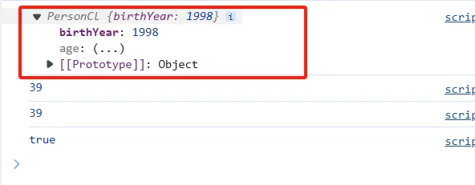

HaoTian · 2024-10-03 21:49:11
在 JavaScript 中，setters 和 getters 是对象属性的特殊方法，用于定义如何访问和设置对象的属性。这些方法使得可以在对对象属性执行读取或写入操作时添加自定义逻辑。
首先我们定义一个类似之前银行家的一个对象
const account = {
owner: "ITshare",
movements: [100, 1200, 550, 130],
get latest() {
return this.movements.slice(-1).pop();
},
set latest(mov) {
this.movements.push(mov);
},
};
console.log(account.latest);
account.latest = 50;
console.log(account.movements);
我们可以在之前的构造函数上去使用这个属性
class PersonCl {
constructor(firstName, birthYear) {
this.firstName = firstName;
this.birthYear = birthYear;
}
cacleAge() {
console.log(2037 - this.birthYear);
}
greet() {
console.log(`Hey ${this.firstName}`);
}
get age() {
return 2037 - this.birthYear;
}
}
const ITshare = new PersonCl("ITshare", 1998);
console.log(ITshare);
ITshare.cacleAge();
console.log(ITshare.age);
console.log(ITshare.__proto__ === PersonCl.prototype);
class PersonCl {
constructor(fullName, birthYear) {
this.fullName = fullName;
this.birthYear = birthYear;
}
cacleAge() {
console.log(2037 - this.birthYear);
}
greet() {
console.log(`Hey ${this.firstName}`);
}
get age() {
return 2037 - this.birthYear;
}
set fullName(name) {
if (name.includes(" ")) this._fullName = name;
else alert(`!!!请输入你的全名`);
}
}
const ITshare = new PersonCl("ITshare", 1998);
console.log(ITshare);
这样并不会创建这个用户
